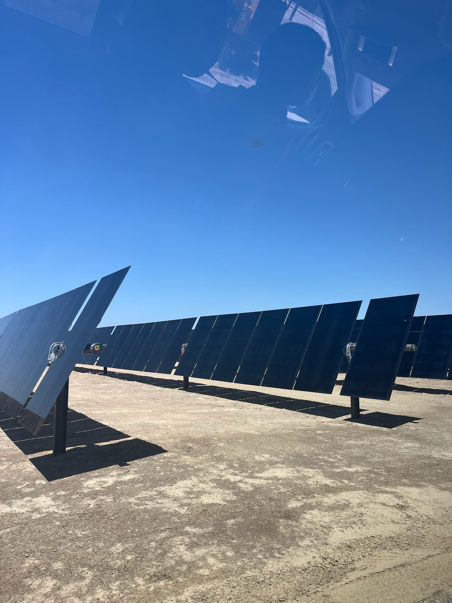
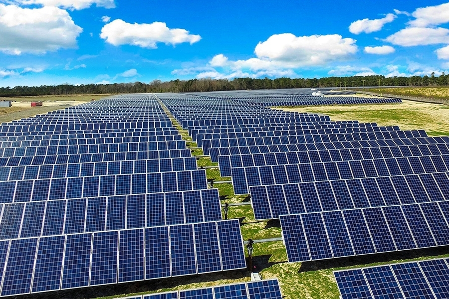
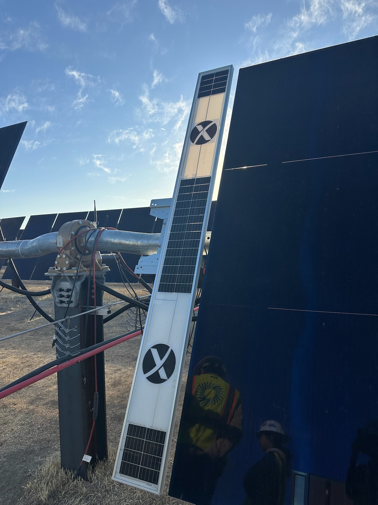

How Solar Works at SOLV
-
Sunlight hits PV modules, producing DC electricity
 -
Mounted on racking systems fixed to ground posts

- Multiple modules form rows, often miles long
 - Trackers adjust panel angle to follow the sun
 -
Wire harnesses send DC power to the inverter skid

- Inverters convert DC to AC electricity

- AC travels to substations for voltage change
- Electricity is delivered to communities
SCADA System
- Monitors & controls DC to AC conversion in real time
- Tracks alarms, production, and remote commands
Grid Connection
- Power sent to utility grid and tracked for revenue